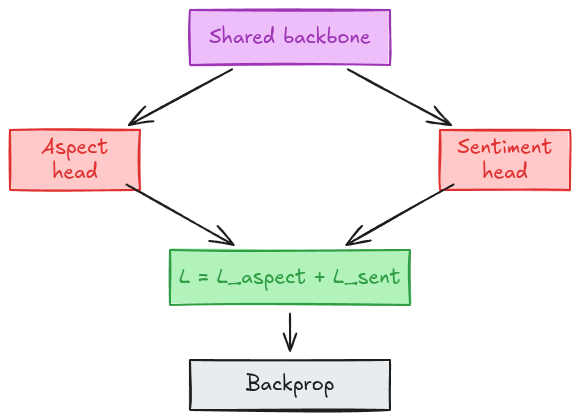
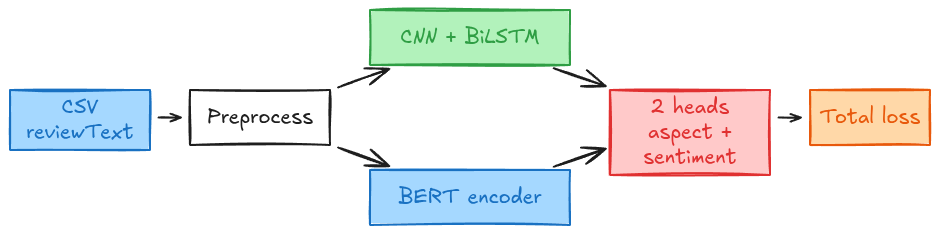
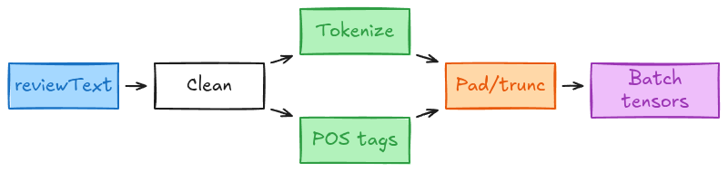
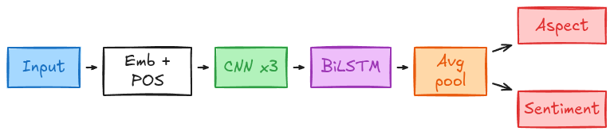
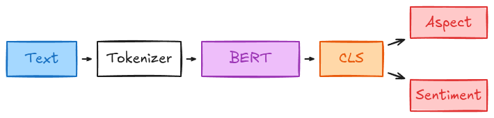
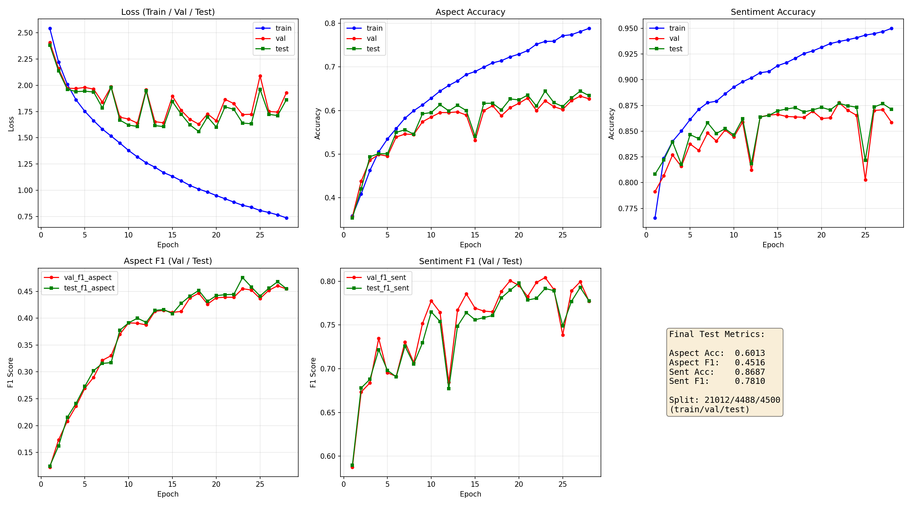
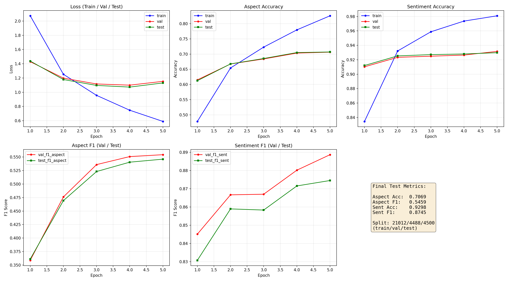
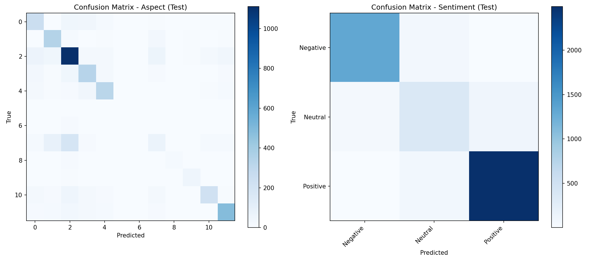

Aspect + sentiment · CNN+BiLSTM vs BERT
Model A implements the MABSA flow: GloVe/POS → CNN(3) → BiLSTM → pooling → multitask heads.
Trang Uyen Tran et al. — integrated CNN–BiLSTM for multitask ABSA
ABSA: predict what the review is about and how the author feels — from one English review.
reviewText (transport-domain
reviews)
103,934 reviews · experiments: 30,000 (seed 42) · split 70% / 15% / 15%
| Positive | 59,413 | 57.2% | |
| Negative | 31,743 | 30.5% | |
| Neutral | 12,778 | 12.3% |
| Convenience | 31,329 | 30.1% | |
| Staff quality | 13,388 | 12.9% | |
| Data availability | 10,314 | 9.9% | |
| Cleanliness | 9,531 | 9.2% | |
| Facilities | 9,462 | 9.1% | |
| Positive | 9,300 | 8.9% | |
| Safety | 9,101 | 8.8% | |
| Accessibility | 8,131 | 7.8% | |
| Punctuality | 1,512 | 1.5% | |
| Price fairness | 1,180 | 1.1% | |
| Neutral | 557 | 0.5% | |
| Negative | 120 | 0.1% |





bert-base-uncased — 12 layers, 768-d| Model | Aspect Acc | Aspect F1 | Sentiment Acc | Sentiment F1 |
|---|---|---|---|---|
| CNN + BiLSTM | 60.1% | 45.2% | 86.9% | 78.1% |
| BERT | 70.7% | 54.6% | 93.0% | 87.4% |



Appendix
| # | Layer | Config | Shape |
|---|---|---|---|
| 1 | Word embedding | Embedding(vocab, 100) |
[B, L, 100] |
| 2 | POS one-hot | vocab=3 | [B, L, 3] |
| 3 | Concat | word ∥ POS | [B, L, 103] |
| 4–6 | CNN ×3 | Conv1d k=3, 128 ch | [B, L, 128] |
| # | Layer | Config | Shape |
|---|---|---|---|
| 7 | BiLSTM | hidden=128, bidirectional | [B, L, 256] |
| 8 | Avg pool | mean(dim=1) |
[B, 256] |
| 9 | FC | 256→256 | [B, 256] |
| 10 | Head aspect | Linear(256→13) | [B, 13] |
| 11 | Head sentiment | Linear(256→4) | [B, 4] |
| Class | MultitaskAbsaModel |
| Input | word_ids, pos_ids · L=62 |
| Output | 13 aspect · 4 sentiment |
| Loss | CE(aspect) + CE(sentiment) |
| Class | TransformerMtlModel |
| Checkpoint | bert-base-uncased |
| Input |
input_ids, attention_mask · L=128
|
| Representation | CLS → 768-d |
| Heads | Linear(768→13), Linear(768→4) |
| CNN + BiLSTM | BERT | |
|---|---|---|
| Tokenization | Word-level + POS | WordPiece |
| Seq length | 62 | 128 |
| Backbone | 3 CNN + BiLSTM | 12 Transformer |
| Dim | 256 | 768 |
| Pretrained | No | Yes |
| Train | 100 ep | 5 ep |
ok050824.csv — English transport-domain
reviews with aspect and sentiment labels.
Questions